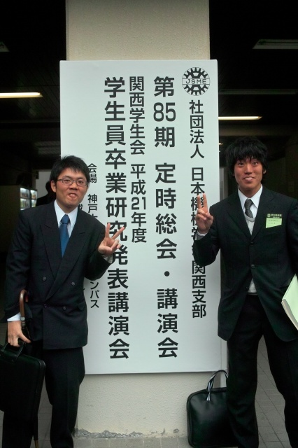

| ・平成21年度学生員卒業研究発表講演会＠神戸大学六甲台キャンパス (H22.03.15) | |||
去年は2人発表で、今年はK(O)梶くんとM永くんが学会デビュー．発表中はローテンション，発表後はハイテンションな二人． |
|||
|
PCトラブルが起ころうが，自信満々に（根拠は無いけど） |
レンズやプリズムに質問が集中．そこじゃないのに． | ||
|

開場前から居るふたり．ここからハイテンションに． |
空気に触れるとお茶が甘くなる理論について． | ||
|
M永くん「これパクチー？カメムシの味するわ」 |
発表？けっこう余裕でしたよ． | ||
|
M脇くんは，会場のお手伝い（忘れて無いです．．） |
ヨーグルトではなく杏仁豆腐です． | ||
|
○人28号．やっちまった感が． |
メンテとかどうするんだろう | ||